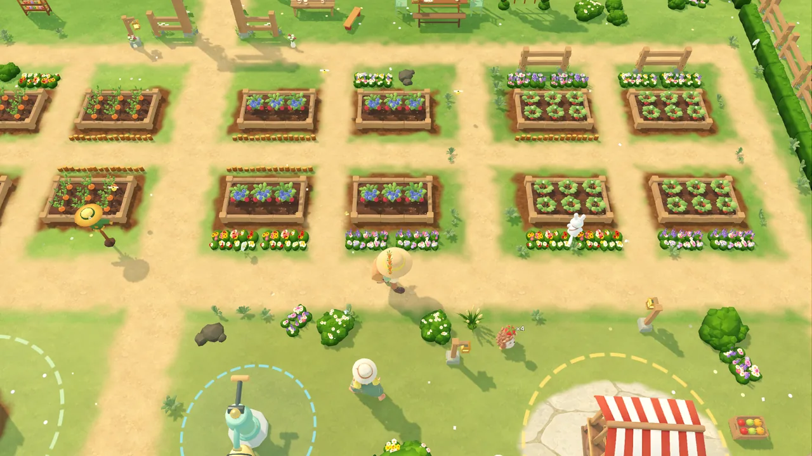
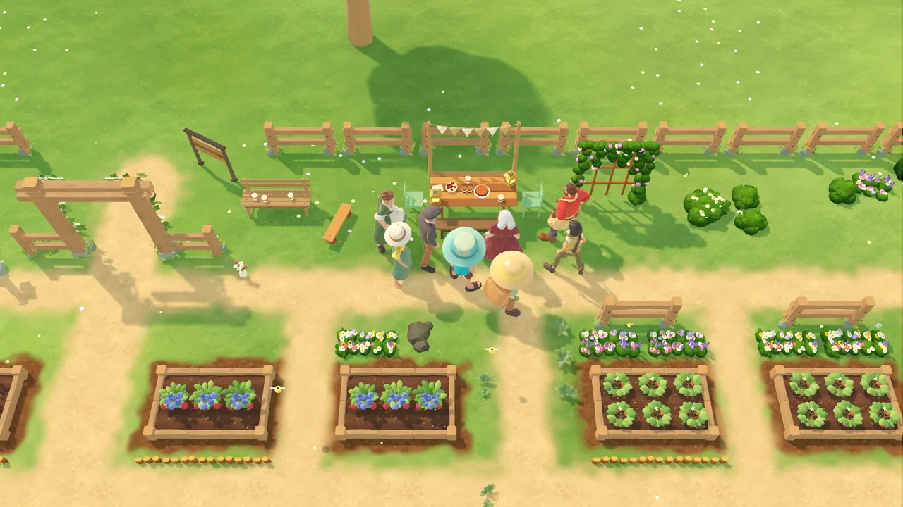
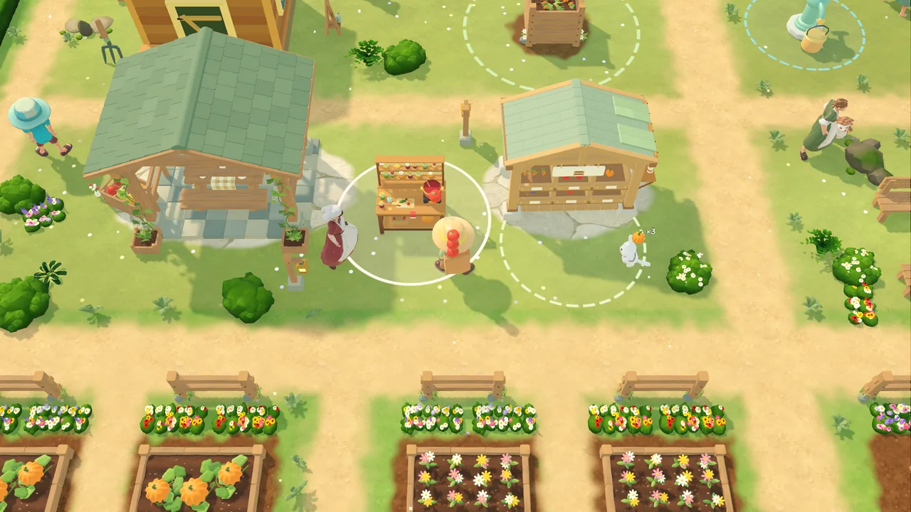
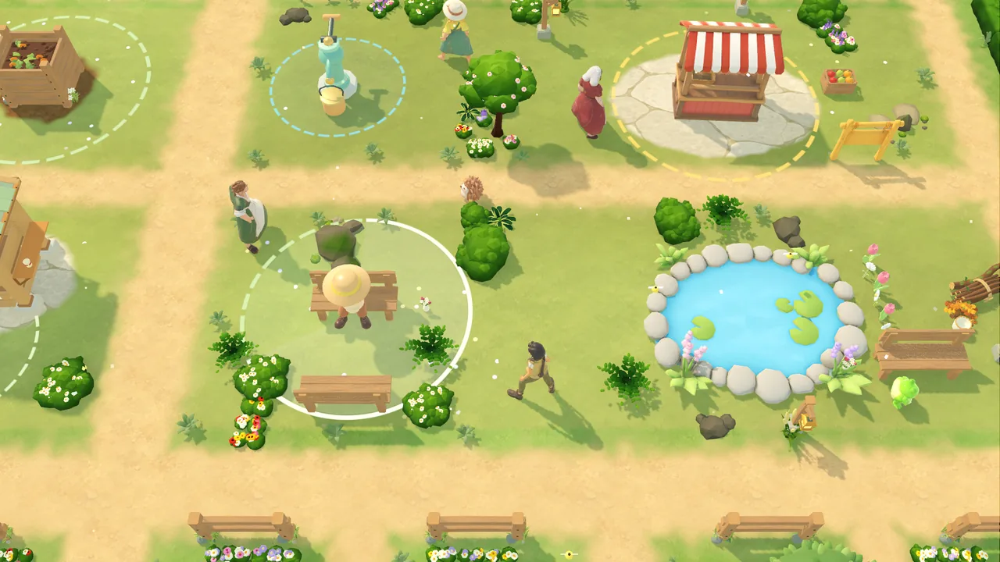
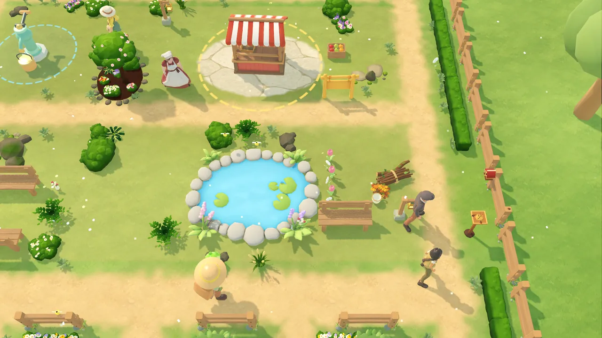
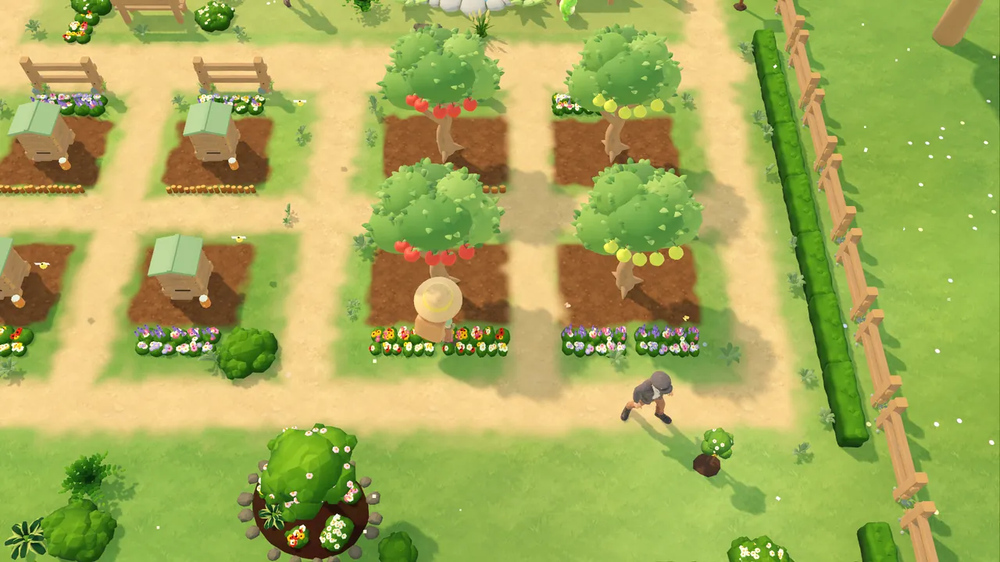
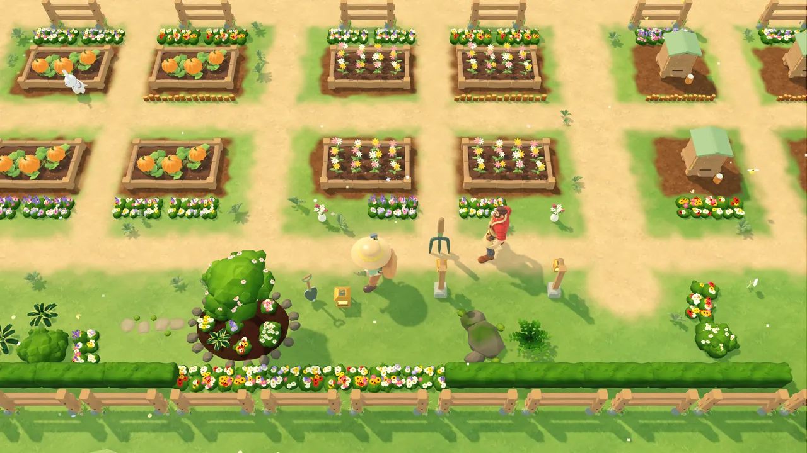
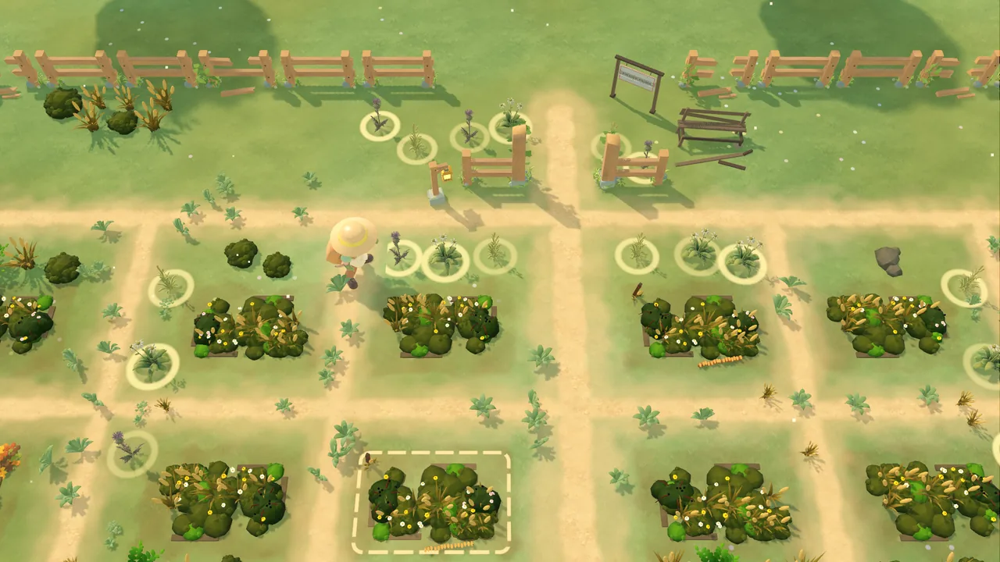

Restore it with your own hands
Clear the overgrowth, dig the old beds, mend the fence and the pump, raise the garden arch and put up lanterns along the paths. Every bit of work stays visible in the garden.
How it begins
An envelope on the notice board leads you to a forgotten community garden: tall weeds, a dry pump and empty beds. Clear a path, carry the waste to the composter, fix the pump and plant the first carrots. When water runs again, Mira, the garden’s keeper, hears it and comes back — and one by one the neighbours return, each with their own requests, small projects and a reason the garden once went quiet.
Screenshots








More than a harvest
Clear the overgrowth, dig the old beds, mend the fence and the pump, raise the garden arch and put up lanterns along the paths. Every bit of work stays visible in the garden.
Mira, Theo, June, Rosa, Eli, Basil and Nora each bring requests, small projects and memories of the old garden — until everyone gathers to celebrate its reopening.
Eight crops, fruit trees and flowers. Keep bees for honey and pollinated harvests, store everything by kind, sell at the market and cook preserves for your neighbours.
Rabbits gather ripe crops, a hedgehog sells your surplus and can carry orders to the neighbours, and a pond frog waters the beds nearby. Train them as the garden grows — the story moments stay yours.
Dry soil asks for water, bees drift between the flowers, birds visit the pond and now and then a gentle rain waters the beds for you.
No combat, no energy bar, no deadlines and no crop death. Your garden keeps growing for a while when you are away, and after the celebration there are fairs, new pages and orders for as long as you like.
From an independent developer
Gardenkin is made by one person at Ksivok Games and is coming to Steam for Windows, in English and Russian, with full keyboard, mouse and controller support (Xbox and PlayStation). The release date and price will be announced on the Steam page.
Support
Found a bug, lost progress or have an idea? Write to us through the contact form — choose Gardenkin, describe what happened and, if you can, your Windows version and the game version shown in the main menu. Every message is read by the developer.